Tipos de relações
Vimos no último post sobre quais tipos de medidas de correlação e associação podem ser calculadas para identificar o grau de associação (ou dependência) entre as variáveis.
Já sabemos que esses coeficientes variam entre 0 e 1 ou entre -1 e +1, de maneira que a proximidade de zero indique a falta de associação entre elas.
Porém o que fazer com tantas métricas? Qual o cálculo mais aconselhado para as relações dois a dois de cada tipo de variáveis (medidas, quantidades, nomes, classes com algum tipo de ordem ou hierarquia)?
Não basta chegar no R e fazer um pairs(dados) junto com cor(dados) e olhar aquele monte de números sem saber se eles apresentam algum resultado realmente relevante embasado na teoria estatística.
Vejamos então os tipos de relações possíveis e quais tipos de medidas podem ser utilizadas a seguir.
Numérica x Numérica
Tipos de medidas que podem ser utilizadas:
- Pearson (Intensidade de relacionamento linear)
- Spearman (Relação monotônica entre dados emparelhados)
- Kendall (Correlação entre duas variáveis ordinais de amostras pequenas)
Graficamente
Um jeito informal e intuitivo de avaliar a relação é verificar se existe relação linear entre as variáveis, além de identificar se esta relação é positiva, negativa ou inexistente.
Duas variaveis
Algumas opções de como avaliar graficamente duas variáveis:
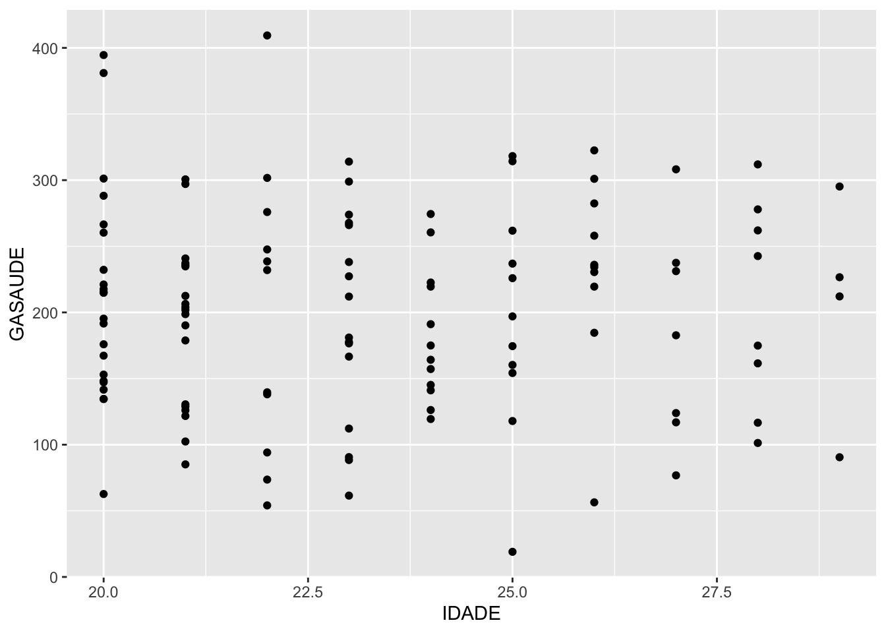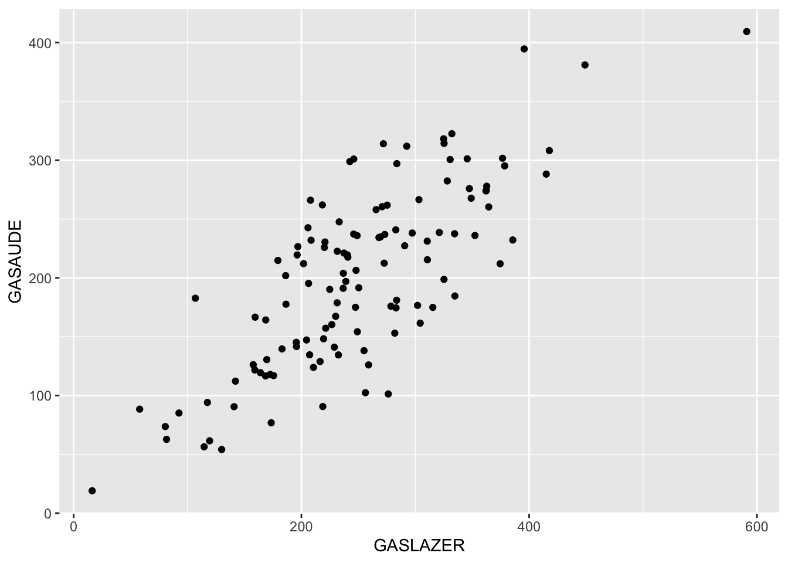
## `geom_smooth()` using formula 'y ~ x'
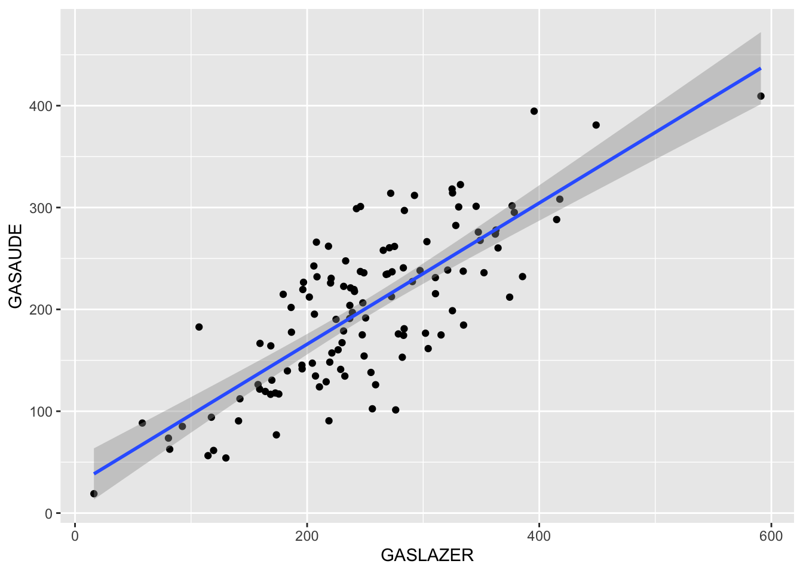
Mais de duas variáveis
Quando existe a presença de mais de duas variáveis em estudo podemos utilizar outras características gráficas além do eixo x e y para identificar padrões, veja:
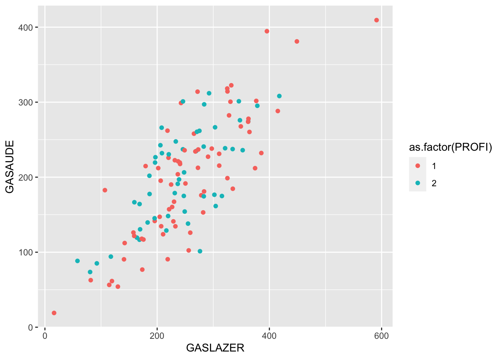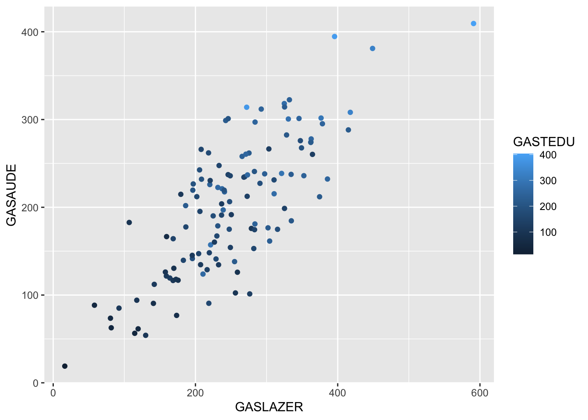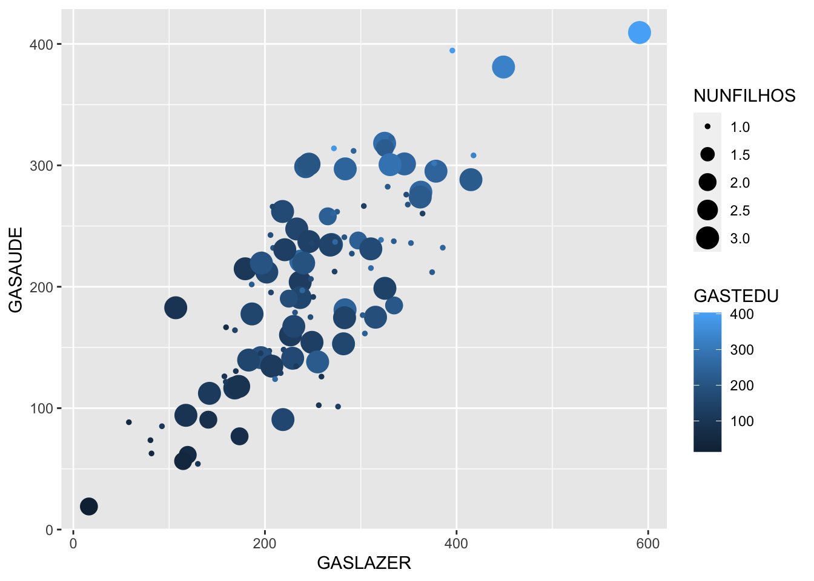
Normalidade
A suposição de normalidade é amplamente utilizada na estatística.
Graficamente
Avaliando a normalidade de forma visual com alguns comandos do ggplot:
### Verificando a Normalidade Através do Histograma
# Criando um painel com o espaço de 4 gráficos
par(mfrow=c(2,2))
#preenchendo os quatro espaços com 4 histogramas (um para cada variável)
histogram=function(x){
hist(x,prob=T)
lines(density(x),col="red")
curve(dnorm(x,mean(x), sd(x)),add=T,col="blue")
}
histogram(dados$GASTEDU)
histogram(dados$GASAUDE)
histogram(dados$GASLAZER)
histogram(dados$IDADE)
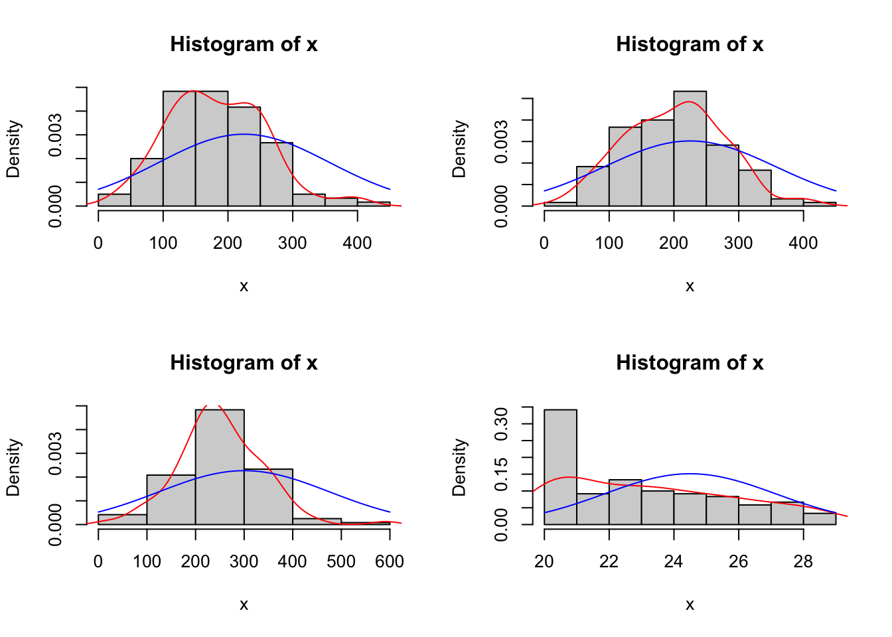
QQ-plot
Compara os quantis dos dados com os quantis de uma normal padrão
par(mfrow=c(2,2))
### Verificando a Normalidade Através do QQplot
qq = function(x){
qqnorm(x,main = "", xlab = "Quantis teóricos N(0,1)", pch = 20)
qqline(x, lty = 1, col = "red")
}
qq(dados$IDADE)
qq(dados$GASAUDE)
qq(dados$GASLAZER)
qq(dados$GASTEDU)
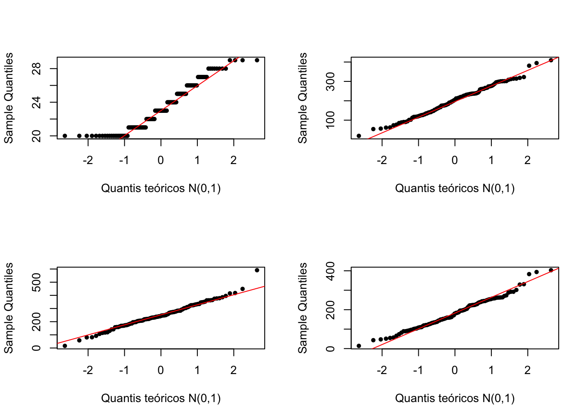
Testes
A seguir, diversos testes de hipóteses para avaliar:
\[
H_0: \text{Dados Normais} \\
H_1: \text{Dados Não Normais}
\]
A seguir uma função que criei colocando logo uma variedade de testes para fornecer diferentes evidências para nossa hipótese:
normalidade<-function(x){
t1 <- ks.test(x, "pnorm",mean(x), sd(x)) # KS
t2 <- lillie.test(x) # Lilliefors
t3 <- cvm.test(x) # Cramér-von Mises
t4 <- shapiro.test(x) # Shapiro-Wilk
t5 <- sf.test(x) # Shapiro-Francia
t6 <- ad.test(x) # Anderson-Darling
t7<-pearson.test(x) # Pearson Test of Normality
testes <- c(t1$method, t2$method, t3$method, t4$method, t5$method,t6$method,t7$method)
valorp <- c(t1$p.value, t2$p.value, t3$p.value, t4$p.value, t5$p.value,t6$p.value,t7$p.value)
resultados <- cbind(valorp)
rownames(resultados) <- testes
print(resultados, digits = 4)
}
normalidade(dados$GASAUDE)
## valorp
## One-sample Kolmogorov-Smirnov test 0.9238
## Lilliefors (Kolmogorov-Smirnov) normality test 0.6494
## Cramer-von Mises normality test 0.6605
## Shapiro-Wilk normality test 0.6297
## Shapiro-Francia normality test 0.6286
## Anderson-Darling normality test 0.6346
## Pearson chi-square normality test 0.3249
Dados normais + Relação linear
Quando os dados são normais e a relação entre variáveis é linear, podemos utilizar os mesmos testes já comentados:
- Pearson
- Spearman (amostras maiores)
- Kendall (amostras pequenas)
Coeficiente de Correlação de Pearson \(\rho\)
No R:
#Matriz de correlações:
cor(dados$GASTEDU,dados$GASAUDE)
## [1] 0.77825
Como saber se a correlação é significativa?
\[
H_0: \text{Não existe correlação} \\
H_1: \text{Existe correlação}
\]
Aplicando o teste:
#Teste de correlação:
cor.test(dados$GASTEDU,dados$GASAUDE,method = "pearson")
Dados não normais e/ou sem relação linear
Quando os dados não se apresentam conforme a distribuição normal ou não apresentam relação linear, temos disponíveis o cálculo das seguintes correlações:
- Spearman (amostras maiores)
- kendall (amostras pequenas)
Coeficiente de Correlação de Spearman \(\rho\)
Ideal quando temos variáveis medidas apenas em uma escala ordinal.
Executando no R:
#Teste de correlação:
cor.test(dados$GASTEDU,dados$GASAUDE,method = "spearman")
Coeficiente de Correlação de Kendall (\(\tau\) de kendall)
Coeficiente de Kendall é, muitas vezes, interpretado como uma medida de concordância entre dois conjuntos de classificações relativas a um conjunto de objetos de estudo.
Vamos considerar apenas os 20 primeiros elementos da amostra:
Aplicação no R:
#Teste de correlação:
cor.test(dados2$IDADE,dados2$GASAUDE,method = "kendall")
Ordinal x Ordinal
Tipos de correlações possíveis para calcular:
- Spearman (amostras maiores)
- kendall (amostras pequenas)
Exemplo de uso de Spearman no R:
cor(dados$ESCOLAR, dados$RENDA, method = "spearman")
cor.test(dados$ESCOLAR, dados$RENDA, method = "spearman")
Exemplo de uso de Kendall com uma amostra menor:
cor(dados2$ESCOLAR, dados2$RENDA, method = "kendall")
cor.test(dados2$ESCOLAR, dados2$RENDA, method = "kendall")
Numérica x Ordinal
Independente de ser normal ou não
- Spearman (amostras maiores)
- Kendall (amostras pequenas)
- Comparações de grupos (Testes de Hipóteses)
Exemplo de uso de Spearman no R:
cor(dados$IDADE, dados$RENDA, method = "spearman")
cor.test(dados$IDADE, dados$RENDA, method = "spearman")
Exemplo de uso de Kendall com uma amostra menor:
cor(dados2$IDADE, dados2$RENDA, method = "kendall")
cor.test(dados2$IDADE, dados2$RENDA, method = "kendall")
Nominal x Nominal
Os termos nível nominal de
medida ou escala nominal são utilizadas para se referir
a àqueles dados que só podem ser categorizados. No
sentido estrito, não existe uma medida ou escala envolvida,
o que existe é apenas uma contagem.
Vamos avaliar a profissão e o estado civil primeiramente, precisamos da tabela de contingência.
Tabelas de Contingência (ou tabelas de freqüência de dupla entrada) são tabelas em que as frequências correspondem a duas classificações, uma classificação está nas linhas da tabela e a outra está nas colunas. Veja:
tab=ftable(as.factor(dados$PROFI),
as.factor(dados$ESTCIVIL),
dnn=c("Profissão", "EStado Civil"))
tab
## EStado Civil 1 2 3 4
## Profissão
## 1 26 13 29 1
## 2 24 6 21 0
Qui-quadrado de independencia
\[
H_0: \text{São independentes (Não associadas)} \\
H_1: \text{Não são independentes (São associadas) }
\]
Executando o teste:
chisq.test(dados$PROFI, dados$ESTCIVIL)
##
## Pearson's Chi-squared test
##
## data: dados$PROFI and dados$ESTCIVIL
## X-squared = 2.2905, df = 3, p-value = 0.5143
OBS: Correção de YAKES quando existe alguma frequência esperada menor do que 5, veja:
Teste exato de fisher
O teste qui-quadrado quando aplicado a amostras pequenas, como por exemplo com tamanho inferior a 20, veja:
fisher.test(dados2$PROFI, dados2$ESTCIVIL)
##
## Fisher's Exact Test for Count Data
##
## data: dados2$PROFI and dados2$ESTCIVIL
## p-value = 0.5226
## alternative hypothesis: two.sided
Medidas de associação
os testes fornecem apenas a resposta se as variáveis estão ou não correlacionadas. Para saber a intensidade desta relação, utilizam-se medidas de associação.
Considere as seguintes medidas:
- \(\mathbf{\phi}\) (phi) (é o R de pearson quando aplicado a tabelas 2x2)
- V de Crámer
- Coeficiente de contingência
Ambos variam de 0 (ausência de associação) a 1 (associação muito forte).
#Comando para tabela cruzada:
tab <- xtabs(~ PROFI + ESTCIVIL, data = dados)
#Calcular as medidas de associação da tabela:
summary(assocstats(tab))
##
## Call: xtabs(formula = ~PROFI + ESTCIVIL, data = dados)
## Number of cases in table: 120
## Number of factors: 2
## Test for independence of all factors:
## Chisq = 2.2905, df = 3, p-value = 0.5143
## Chi-squared approximation may be incorrect
## X^2 df P(> X^2)
## Likelihood Ratio 2.6823 3 0.44324
## Pearson 2.2905 3 0.51435
##
## Phi-Coefficient : NA
## Contingency Coeff.: 0.137
## Cramer's V : 0.138
#phi (r aplicado na Tabela de 2x2 --> Phi)
cor(dados$PROFI,dados$ESTCIVIL)
## [1] -0.06972599
Kappa
É uma medida de concordância.
Obs: Também pode ser utilizado o coeficiente de Kappa ponderado (pesquisar)
#Kappa
medico1<-sample(0:1,10, replace=T)
medico2<-sample(0:1,10, replace=T)
#Kappa.test(x, y=NULL, conf.level=0.95)
fmsb::Kappa.test(medico1,medico2)
## $Result
##
## Estimate Cohen's kappa statistics and test the null hypothesis that
## the extent of agreement is same as random (kappa=0)
##
## data: medico1 and medico2
## Z = -0.5212, p-value = 0.6989
## 95 percent confidence interval:
## -0.5871383 0.3290738
## sample estimates:
## [1] -0.1290323
##
##
## $Judgement
## [1] "No agreement"
Nominal x Ordinal
Vamos avaliar a profissão e o estado civil primeiramente, precisamos da tabela de contingência:
tab=ftable(as.factor(dados$PROFI),
as.factor(dados$RENDA),
dnn=c("Profissão", "Renda"))
tab
## Renda 1 2 3 4
## Profissão
## 1 4 52 9 4
## 2 0 30 17 4
Qui-quadrado de independencia
\[
H_0: \text{São independentes (Não associadas)} \\
H_1: \text{Não são independentes (São associadas) }
\]
Executando o teste:
chisq.test(dados$PROFI, dados$RENDA)
##
## Pearson's Chi-squared test
##
## data: dados$PROFI and dados$RENDA
## X-squared = 9.8864, df = 3, p-value = 0.01956
OBS: Correção de YAKES quando existe alguma frequência esperada menor do que 5, veja:
Teste exato de fisher
O teste qui-quadrado quando aplicado a amostras pequenas, como por exemplo com tamanho inferior a 20, veja:
fisher.test(dados2$PROFI, dados2$RENDA)
##
## Fisher's Exact Test for Count Data
##
## data: dados2$PROFI and dados2$RENDA
## p-value = 1
## alternative hypothesis: two.sided
Medidas de associação
os testes fornecem apenas a resposta se as variáveis estão ou não correlacionadas. Para saber a intensidade desta relação, utilizam-se medidas de associação.
Considere as seguintes medidas:
- \(\mathbf{\phi}\) (phi) (é o R de pearson quando aplicado a tabelas 2x2)
- V de Crámer
- Coeficiente de contingência
Ambos variam de 0 (ausência de associação) a 1 (associação muito forte).
#Comando para tabela cruzada:
tab <- xtabs(~ PROFI + RENDA, data = dados)
#Calcular as medidas de associação da tabela:
summary(assocstats(tab))
##
## Call: xtabs(formula = ~PROFI + RENDA, data = dados)
## Number of cases in table: 120
## Number of factors: 2
## Test for independence of all factors:
## Chisq = 9.886, df = 3, p-value = 0.01956
## Chi-squared approximation may be incorrect
## X^2 df P(> X^2)
## Likelihood Ratio 11.3123 3 0.010152
## Pearson 9.8864 3 0.019557
##
## Phi-Coefficient : NA
## Contingency Coeff.: 0.276
## Cramer's V : 0.287
#phi (r aplicado na Tabela de 2x2 --> Phi)
cor(dados$PROFI,dados$RENDA)
## [1] 0.231198
Kappa
Testa a concordância entre duas pessoas (a hipótese nula é de que a concordância é zero)
#Kappa
medico1<-sample(0:1,10, replace=T)
medico2<-sample(0:1,10, replace=T)
#Kappa.test(x, y=NULL, conf.level=0.95)
fmsb::Kappa.test(medico1,medico2)
## $Result
##
## Estimate Cohen's kappa statistics and test the null hypothesis that
## the extent of agreement is same as random (kappa=0)
##
## data: medico1 and medico2
## Z = -2.0255, p-value = 0.9786
## 95 percent confidence interval:
## -1.1831625 -0.1501708
## sample estimates:
## [1] -0.6666667
##
##
## $Judgement
## [1] "No agreement"
Correlação parcial
Controlando variável numérica
Pode ser que queremos estudar a correlação entre x e y, porém existem uma variável z que também está correlacionada com alguma das duas variáveis, veja:
## `geom_smooth()` using formula 'y ~ x'

## [1] 0.7821115
## `geom_smooth()` using formula 'y ~ x'
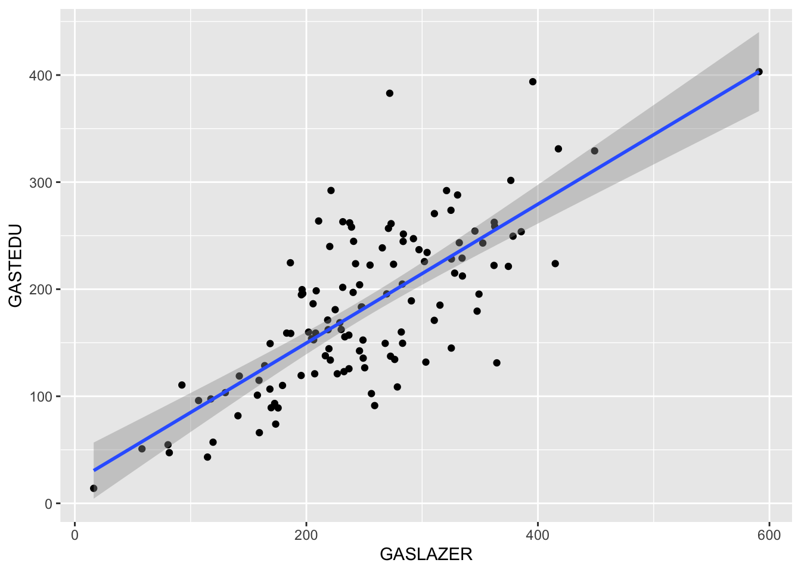
## [1] 0.7476177
## [1] 0.7821115
## `geom_smooth()` using formula 'y ~ x'
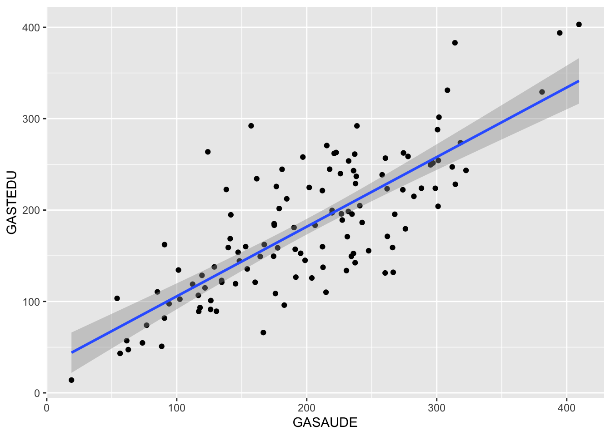
## [1] 0.77825
Isto implica que a variável educação é uma variável de confusão, veja as correlações:
## Registered S3 method overwritten by 'GGally':
## method from
## +.gg ggplot2
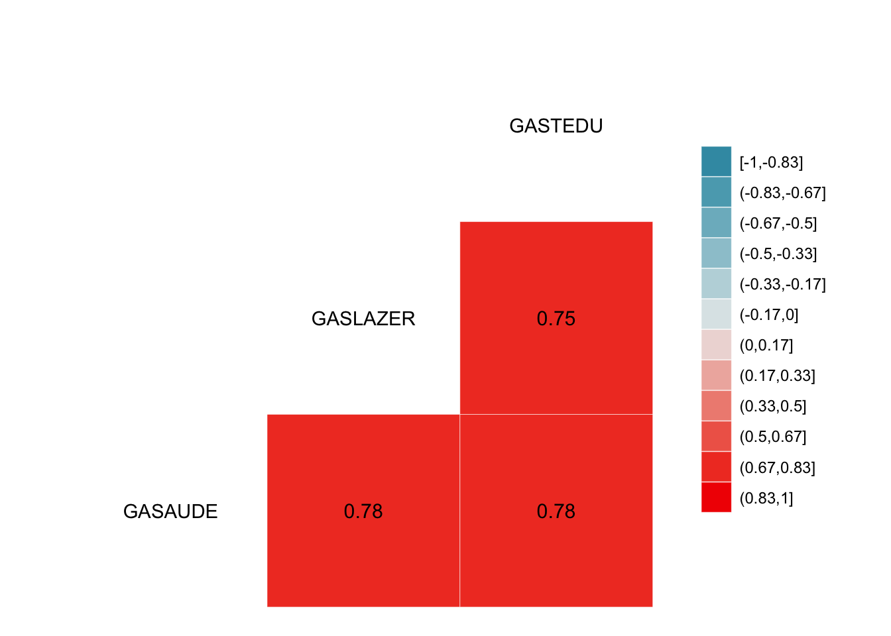
O que acontece com a associação entre lazer e saúde quando controlamos a variável de confusão educação?
# correlação LAZER vc SAÚDE controlando o EDUCAÇÃO (correlação parcial de primeira ordem = um variável para controlar)
rp<-ggm::pcor(c("GASLAZER", "GASAUDE", "GASTEDU"),var(dados)) #controlando A EDUCAÇÃO
#Significância da Correlação Parcial
#Coeficiente de Determinação com base no Coef. de Pearson
r<-cor(dados$GASLAZER,dados$GASAUDE) #sem controlar o lazer
#Coeficiente de Determinação com base na correlação parcial
pcor.test(rp,1,length(dados$GASAUDE)) #"1" porque só usamos uma variável de controle
## $tval
## [1] 5.922106
##
## $df
## [1] 117
##
## $pvalue
## [1] 3.259388e-08
data.frame("Sem correção"=r^2, "Com correção"=rp^2)
## Sem.correção Com.correção
## 1 0.6116985 0.2306242
Controlando variável Qualitativa
A variável de controle (ou qualquer uma delas) pode ser dicotômica (categórica)
#Visualmente:
ggplot(data = dados, aes(x = GASLAZER, y = GASAUDE,colour = as.factor(PROFI))) + geom_point()

#Sem controlar:
r=cor(dados$GASLAZER, dados$GASAUDE)
rp<-pcor(c("GASLAZER", "GASAUDE", "PROFI"),var(dados))
data.frame("Sem correção"=r^2, "Com correção"=rp^2)
## Sem.correção Com.correção
## 1 0.6116985 0.6162497